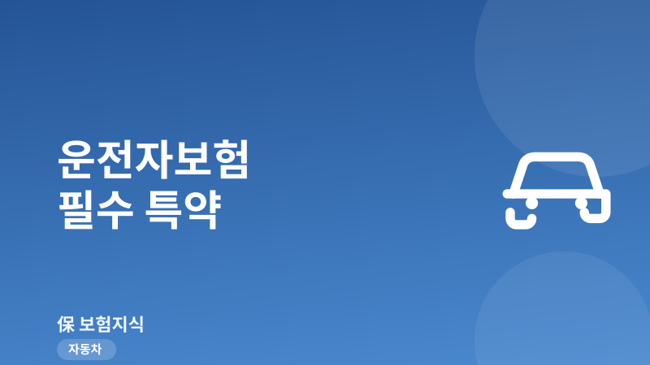
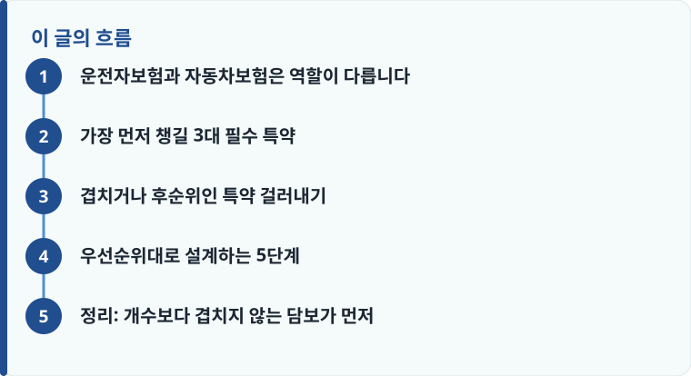

운전자보험의 핵심은 자동차보험이 책임지지 않는 형사·행정상 비용, 즉 교통사고처리지원금·변호사선임비용·벌금 세 가지입니다.
자동차보험은 대인·대물 배상(민사)을 맡고, 운전자보험은 운전자 개인의 형사 합의금과 방어 비용을 맡는다는 역할 분담을 이해해야 합니다.
상해·질병·만기환급형 특약을 많이 붙이면 보험료가 크게 오르므로, 겹치는 담보는 과감히 빼는 것이 실속입니다.
운전자보험과 자동차보험은 역할이 다릅니다
운전자보험을 고르기 전에 반드시 짚어야 할 것은 자동차보험과의 역할 분담입니다. 자동차보험의 대인·대물 배상은 사고로 다친 상대방과 파손된 재물에 대한 민사상 손해배상을 책임집니다. 그런데 사망이나 중상해 사고, 이른바 12대 중과실 사고가 발생하면 운전자에게는 민사 배상과 별개로 형사 처벌과 행정 처분이 따로 부과됩니다. 이 형사·행정 영역을 채워 주는 것이 바로 운전자보험입니다. 두 보험의 구조가 헷갈린다면 운전자보험 기본 구조와 자동차보험 담보 구성을 함께 읽으면 경계가 분명해집니다.
즉 자동차보험이 있어도 운전자 본인이 물어야 하는 형사 합의금, 변호사 선임 비용, 벌금은 대부분 보장되지 않습니다. 운전자보험은 이 공백을 메우기 위한 상품이므로, 특약을 고를 때도 '자동차보험과 겹치지 않는 담보'를 최우선으로 두는 것이 합리적입니다. 상해 입원비나 골절 진단비 같은 담보는 실손보험이나 상해보험과 중복되기 쉬워, 우선순위에서는 뒤로 밀어도 됩니다.
구체적인 예로 신호위반이나 중앙선 침범, 어린이보호구역 사고처럼 12대 중과실에 해당하면 종합보험에 가입되어 있어도 형사 처벌 대상이 됩니다. 이때 피해자와 형사 합의가 이루어지지 않으면 처벌 수위가 높아질 수 있는데, 합의금은 수백만 원에서 수천만 원까지 요구되기도 합니다. 이 돈을 운전자 본인이 마련해야 한다는 점이 바로 운전자보험이 필요한 이유이자, 특약 선택의 기준이 되어야 하는 부분입니다.
가장 먼저 챙길 3대 필수 특약
운전자보험에서 반드시 확인해야 할 핵심 담보는 세 가지입니다. 첫째, 교통사고처리지원금입니다. 이는 상대방이 사망하거나 중상해(전치 일정 주 이상)를 입었을 때, 또는 12대 중과실 사고로 형사 합의가 필요할 때 지급되는 형사 합의금 성격의 담보입니다. 상해 급수나 부상 정도에 따라 한도가 나뉘며, 사망·중상해 기준으로 1억 원에서 2억 원 안팎까지 설정하는 경우가 많습니다.
둘째, 변호사선임비용입니다. 형사 입건이나 구속, 공소 제기가 되면 방어를 위해 변호사를 선임해야 하는데, 사건 한 건당 수백만 원에서 수천만 원이 들 수 있습니다. 이 특약은 보통 사고당 한도(예: 5,000만 원)를 정해 실제 지출한 선임료를 보장합니다. 셋째, 자동차사고 벌금입니다. 대인 사고로 부과되는 형사 벌금은 최대 2,000만 원, 대물이나 스쿨존 사고 등에서는 별도 한도가 적용되므로, 벌금 담보 한도가 실제 법정 상한을 감당할 수 있는지 확인해야 합니다. 이 세 가지는 어느 것도 자동차보험이 대신 내주지 않는다는 공통점이 있어, 담보별 한도를 비교하는 운전자보험 비교 기준을 참고해 우선 채우는 것이 좋습니다.

겹치거나 후순위인 특약 걸러내기
운전자보험 가입 설계서를 받으면 상해 사망·후유장해, 골절 진단비, 입원일당, 깁스 치료비, 수술비, 심지어 질병 담보까지 붙어 있는 경우가 흔합니다. 이런 담보들은 보장 자체가 나쁜 것은 아니지만, 이미 실손보험이나 상해보험, 건강보험으로 대비하고 있다면 중복 가입이 됩니다. 특히 만기환급형으로 설계하면 순수보장형보다 보험료가 두세 배까지 올라가는데, 환급을 받으려고 20년간 더 낸 보험료가 물가상승을 감안하면 실익이 크지 않을 수 있습니다.
따라서 이미 다른 보험이 있는 사람이라면 상해·질병성 담보는 최소한만 남기고, 형사·행정 담보에 예산을 집중하는 편이 낫습니다. 사고 이후 실제 어떤 비용이 어떤 순서로 발생하는지 감을 잡고 싶다면 자동차 사고와 보험 칼럼에서 사고 처리 흐름을 함께 살펴보는 것을 권합니다.
또 하나 흔히 놓치는 부분이 자기부담금과 지급 조건입니다. 벌금 담보는 실제 확정된 벌금액 내에서 지급되고, 변호사선임비용도 실제 지출을 증빙해야 보장되는 실손 성격이 강합니다. 교통사고처리지원금 역시 상대방의 상해 급수나 진단 주수, 형사 합의 성립 여부 같은 조건을 충족해야 지급됩니다. 그래서 단순히 '가입 금액이 크다'가 아니라, 어떤 조건에서 얼마가 나오는지를 설계서에서 하나씩 확인하는 습관이 필요합니다. 특약별 지급 조건이 상품마다 다르기 때문에, 같은 이름의 담보라도 실제 보장 범위는 차이가 날 수 있습니다.
작성·검수 기준
이 글은 특정 보험사 상품을 권유하기 위한 것이 아니라, 운전자보험 특약의 우선순위를 정할 때 알아야 할 일반적인 기준을 설명하기 위해 작성했습니다. 교통사고처리지원금의 지급 조건, 변호사선임비용과 벌금 담보의 한도, 상해 급수 구분은 가입 시점의 약관과 개별 상품에 따라 달라질 수 있습니다.
정확한 보장 범위와 지급 조건은 본인 증권의 약관과 상품설명서, 그리고 운전자보험 기본 구조를 함께 확인하는 것이 가장 정확합니다.
우선순위대로 설계하는 5단계
특약이 수십 개라 어디서부터 손대야 할지 막막하다면, 다음 순서로 정리하면 판단이 쉬워집니다. 핵심은 자동차보험과 겹치지 않는 담보를 먼저 채우고, 나머지는 이미 가입한 다른 보험과 중복되는지를 기준으로 덜어 내는 것입니다. 예산이 한정되어 있을수록 형사·행정 담보의 한도를 충분히 확보하는 쪽에 무게를 두고, 상해성 담보는 최소 수준으로 맞추는 것이 사고 시 체감 효용이 큽니다.
- 교통사고처리지원금 한도를 사망·중상해 기준(예: 1억~2억 원)으로 먼저 정합니다.
- 변호사선임비용과 자동차사고 벌금(대인 최대 2,000만 원) 담보를 법정 상한에 맞춰 채웁니다.
- 스쿨존·자전거·개인형 이동장치 등 본인 운전 환경에 맞는 확대 담보를 확인합니다.
- 상해·골절·입원일당 등은 기존 실손·상해보험과 중복되는지 점검해 최소화합니다.
- 만기환급형 대신 순수보장형으로 보험료를 낮추고, 갱신 주기와 총 납입액을 비교해 결정합니다.
정리: 개수보다 겹치지 않는 담보가 먼저
운전자보험은 특약이 많다고 좋은 보험이 아닙니다. 자동차보험이 채워 주지 못하는 형사 합의금·변호사 비용·벌금, 이 세 가지를 충분한 한도로 먼저 확보하고, 이미 다른 보험으로 대비된 상해·질병 담보는 과감히 덜어 내면 보험료를 낮추면서도 정작 필요한 순간에 힘이 되는 설계를 만들 수 있습니다.
다른 보험 정보 글이 궁금하다면 보험지식 블로그에서 이어 읽어 보세요. 가입 전에는 반드시 약관과 상품설명서를 확인하는 것이 가장 안전한 방법입니다.